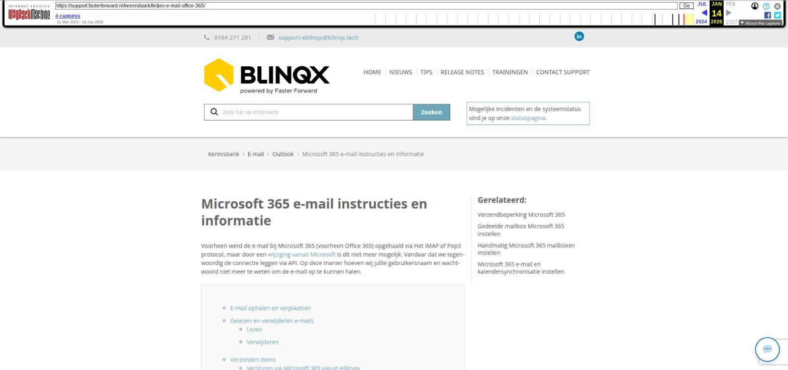

Microsoft 365 e-mail instructies en informatie

Tekstinhoud
Microsoft 365 e-mail instructies en informatie
Voorheen werd de e-mail bij Microsoft 365 (voorheen Office 365) opgehaald via Het IMAP of Pop3 protocol, maar door een wijziging vanuit Microsoft is dit niet meer mogelijk. Vandaar dat we tegenwoordig de connectie leggen via API. Op deze manier hoeven wij jullie gebruikersnaam en wachtwoord niet meer te weten om de e-mail op te kunnen halen.
E-mail ophalen en verplaatsen
Gelezen en verwijderen e-mails
Lezen
Verwijderen
Verzonden items
Versturen via Microsoft 365 vanuit eBlinqx
Aanpassingen zichtbaar
Spam
Foutmelding in de e-mailbox
E-mail ophalen en verplaatsen
eBlinqx haalt bij Microsoft 365 de e-mail op uit de mappen 'Postvak in', 'Verzonden items', 'Verwijderde items' en 'Spam'. Deze e-mail komt in eBlinqx ook in deze mappen te staan. Deze mappen noemen we de hoofdmappen. Wat betreft het verplaatsen van e-mails gelden de volgende regels:
De map Ongewenst: indien je in Microsoft 365 een e-mail versleept vanuit de map Ongewenst of je sleept een e-mail naar de map Ongewenst dan vindt deze wijziging ook in eBlinqx plaatst. Wanneer je in eBlinqx de e-mail van de map Ongewenst naar Postvak In versleept of je sleept een e-mail naar de map Ongewenst dan vindt deze wijziging niet plaats in Microsoft 365.
Wanneer een e-mail verplaatst wordt in Microsoft 365 binnen eenzelfde hoofdmap dan doet eBlinqx hier niets mee. Een voorbeeld is een e-mail verplaatsen van de Postvak In naar een submap van de Postvak In
Als in eBlinqx de e-mail in de prullenbak bevindt dan blijft deze in de prullenbak staan ongeacht of je in Microsoft 365 deze verplaatst of hierin wijzigingen doet
Gelezen en verwijderen e-mails
Lezen
E-mails afkomstig uit Microsoft 365 e-mailboxen (de hoofdmappen), die al gelezen zijn, hebben deze status ook in eBlinqx. Als je dus in de Microsoft 365 een e-mail leest, staat deze in eBlinqx ook als gelezen. Wanneer je in eBlinqx een e-mail leest, dan komt de e-mail in Microsoft 365 ook op gelezen te staan.
Verwijderen
Wanneer je in Microsoft 365 een e-mail verwijdert dan wordt deze ook in de e-mailmodule van eBlinqx verwijderd. Indien deze e-mail gekoppeld is aan een dossier, dan blijft deze e-mail wel gekoppeld aan het dossier. Wanneer je in eBlinqx een e-mail verwijderd dan wordt deze ook verwijderd in Microsoft 365. Hierop is een uitzonderingsgeval, namelijk:
Wanneer je in eBlinqx een e-mail verwijderd en deze staat in een hoofdmap dan wordt de e-mail ook in Microsoft 365 verwijderd. Indien je een e-mail van bijvoorbeeld de Postvak In naar een submap verplaatst, deze e-mail vervolgens in eBlinqx verwijderd, dan blijft deze in de submap van Microsoft 365. De e-mail wordt dan niet verwijderd.
Verzonden items
E-mails die verzonden zijn vanuit Microsoft 365 komen in Microsoft 365 te staan in de map Verzonden items. Deze map wordt opgehaald door eBlinqx, waardoor deze verzonden e-mails ook in eBlinqx komen te staan.
Versturen via Microsoft 365 vanuit eBlinqx
In de e-mailmanager kan je per mailbox aangeven of de e-mails vanuit eBlinqx verstuurd moeten worden via de uitgaande server van Microsoft 365. Dit via de e-mailmanager – betreffende mailbox – het veld 'Verstuur via Office365'.
Afhankelijk van deze setting komen e-mails die verzonden zijn vanuit eBlinqx ook in de verzonden map in Microsoft 365 te staan. Staat deze setting op 'Ja' dan zie je de verzonden e-mails vanuit eBlinqx ook terug in Microsoft 365. Staat deze op 'Nee' dan zie je e-mails die verzonden zijn vanuit eBlinqx niet in de verzonden items in Microsoft 365 te staan. Deze worden dan namelijk verstuurd via onze uitgaande SMTP server. Dit wordt niet meegenomen door Microsoft 365. Een ander voordeel van het versturen via de uitgaande server Microsoft 365 is dat het dan niet nodig is om de SPF, DKIM en DMARC in te stellen. Ga je met het e-mailadres grote e-mailvolumes in één keer versturen, bijvoorbeeld vanuit een campagne, dan is het belangrijk om rekening te houden met de verzendbeperking.
Let op: als je verstuurt via Office 365 dan wordt de afzendernaam vanuit Microsoft 365 meegestuurd en niet de afzendernaam die in eBlinqx in de e-mailmanager staat ingesteld.
Het kan zijn dat 'Verstuur via Office365' op 'Nee' stond en dat je deze aanpast naar 'Ja'. Er verschijnt dan een melding dat bij deze wijziging de e-mailbox opnieuw geauthentiseerd moet worden. Pas bij opslaan (via het opslaanicoon en niet via de knop OK) wordt deze nieuwe instelling onthouden en is opnieuw authentiseren nodig.
Aanpassingen zichtbaar
Wanneer je wijzigingen in eBlinqx doorvoert dan zal dit direct aangepast worden in Microsoft 365. Wanneer je wijzigingen doorvoert in Microsoft 365 dan zullen deze wijzigingen pas in eBlinqx zichtbaar zijn als het syncproces is doorlopen. Dit syncproces wordt uitgevoerd wanneer je op de 'ophaalknop' in de e-mailmodule drukt of wanneer je onder jouw e-mailbox de interval hebt ingesteld en de minuten van deze interval zijn doorlopen.
Spam
Het kan gebeuren dat gewenste e-mail in de ongewenste map/spam map van Microsoft 365 terecht komt. eBlinqx haalt de e-mail uit de mappen op. Dus als je in eBlinqx een e-mail uit de spam naar de postvak in versleept dan onthoudt eBlinqx dit niet voor de volgende keer, omdat hij letterlijk de e-mail ophaalt uit de mappen op Outlook. In het omgaan met spam zijn er twee mogelijkheden:
In Office 365 kenmerk je de e-mail als veilig, waardoor in het vervolg in Microsoft 365 al in de Postvak In terecht komt, door eBlinqx wordt opgehaald en zo ook in eBliqx in de Postvak In komt te staan
In eBlinqx stel je een mailingregel in die ervoor zorgt dat e-mail in de spammap eBlinqx doorgezet wordt naar de Postvak in in eBlinqx
Het kan voorkomen dat de (interne) e-mail in de spam terecht komt. Om dit voorkomen kan jouw ICT-beheerder verschillende zaken instellen, namelijk:
SPF
DKIM
DMARC
Stel je in dat de e-mail vanuit de uitgaande server Microsoft 365 verzonden moet worden dan is het niet nodig om dit in te stellen.
Foutmelding in de e-mailbox
In een e-mailbox kan de foutmelding 'uw e-mail kan momenteel niet opgehaald worden van de server, is het wachtwoord gewijzigd? Pas deze dan hier aan' verschijnen. eBlinqx maakt contact met de server om de e-mail op te halen. Wanneer het meerdere malen niet lukt om contact te maken met de server dan verschijnt deze foutmelding en wordt de interval/automatisch ophalen van de e-mail op 'geen' gezet. Het niet contact kunnen maken met de server hoeft niet perse met het wachtwoord te maken te hebben. Hier kunnen ook andere redenen voor zijn.
In de e-mailmanager kan je per e-mailadres instellen na hoeveel aantal mislukte poging om contact te maken de interval uitgeschakeld wordt. Het 'Uitschakelen na aantal foutmeldingen' staat standaard op 10x. Dit zou je kunnen verhogen, waardoor de interval minder snel op 'geen' komt te staan. Aan de andere kant krijg je met 10x eerder de melding indien er geen contact gemaakt kan worden met de server.
Mocht de foutmelding verschijnen dan kan je meerdere dingen doen:
Je kan via de link inloggen op het Microsoft account en eventueel daar de gegevens controleren en de interval in de e-mailmanager terug op 5 minuten zetten.
Je kan de e-mailbox opnieuw authenticeren. Dit via de e-mailmodule – hamburgermenu in de betreffende e-mailbox – opnieuw authenticeren. Ook hier weer de interval in de e-mailmanager op 5 minuten zetten.
Synchronisatie herstellen: indien je de juiste rechten hebt, kan je de synchronisatie opnieuw instellen. Dit kan je toepassen als er e-mails op de mailserver staan die niet door eBlinqx zijn opgehaald en je deze toch nog wilt binnenhalen. Onder 'Synchronisatie herstellen' kan je een nieuwe synchronisatiedatum invoeren, akkoord aanvinken en opslaan. Met deze nieuwe synchronisatiedatum kan je e-mails vanaf een bepaalde datum en tijd ophalen van de mailserver. Alleen de e-mails die nog niet eerder zijn binnengekomen worden opgehaald. Deze e-mailberichten krijgen de ontvangstdatum van het moment van ophalen.
De e-mails die op het moment van ontbreken verbinding niet in eBlinqx zijn binnengekomen worden na herstel van verbinding alsnog opgehaald.
Let op: je hebt de juiste rechten nodig om gebruik te kunnen maken van de e-mailmanager.
Laatste update: 19 november 2025
Tagged: e-mail
Was deze informatie nuttig?
Ja Nee